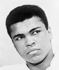

Velocidad, fuerza, reflejos y mucha resistencia. La popularidad del boxeo no tiene límites, tanto que se ha colado en la lista de los deportes más vistos y practicados de la actualidad. Hoy en día, podemos ver en los gimnasios deportistas practicando esta disciplina a nivel amateur o incluso tú mismo puedes disfrutar de increíbles veladas de boxeo en muchas ciudades de España. Recordamos la historia de este deporte junto a los boxeadores más famosos de este deporte de combate. Aquí algunos de los mejores de la historia.
1
Muhammad Ali
Sin ninguna duda, Muhammad Ali es uno de los boxeadores más famosos de la historia de este deporte. Desde 1960 hasta 1981, Ali llegó a conseguir un total de 56 victorias, siendo 37 de ellas por nocaut, y medalla de oro en las Olimpiadas de Roma de 1960. Su particular estilo en el ring llamaba la atención a profesionales y amantes de este deporte de contacto. Durante años dominó a la perfección su categoría de peso pesado, derrotando incluso a leyendas como Sonny Liston, George Foreman y Joe Frazier. Más allá de las cuerdas del ring, Ali demostró tener una gran personalidad convirtiéndose en activista en la lucha de los derechos de los afroamericanos. Todo un ejemplo de coraje y superación.
2
Joe Calzaghe

Joe Calzaghe puede presumir de haber sido hasta en 10 ocasiones campeón del mundo del peso semipesado. Este boxeador inglés llegó a vencer a sus oponentes con más de 30 victorias por ko.
3
Myke Tyson

Myke Tyson dominó este deporte desde mitad de la década de los 80 hasta principios de los 2000. Gracias a sus 50 victorias, de las cuáles 44 fueron con nocaut, Tyson está considerado como uno de los boxeadores famosos actuales. Su increíble potencia en el ring fue manchada, en algunas ocasiones, por una vida social con auténticos escándalos. Además de su maestría en este deporte, a Myke siempre le recordaremos por arrancar de un mordisco la oreja de su oponente.
4
Rocky Marciano

Sus múltiples títulos y victorias hacen que Rocky Marciano se encuentre dentro de la lista de boxeadores más influyentes del mundo. A lo largo de su carrera profesional consiguió alzarse con el título de campeón mundial de peso pesado desde 1952 hasta 1956. Rocky se retiró a los 33 años con un gran triunfo que muy pocos pueden alcanzar hoy en día: totalmente invicto.
5
Óscar de la Hoya

El boxeador mexicano Óscar de la Hoya ha sido el único en ganar hasta un total de seis cinturones en categorías diferentes. Además, este deportista se alzó con títulos tan relevantes como la medalla de oro en los Juegos Olímpicos de Barcelona y el Campeón Liviano Junior de la OMB en dos ocasiones.